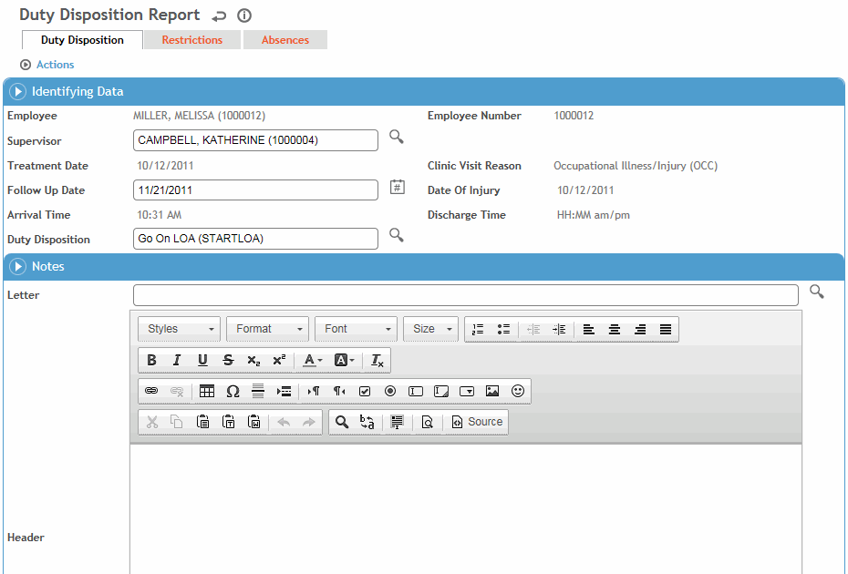

The Duty Disposition report summarizes an employee’s current temporary restrictions, permanent restrictions and medical disposition (e.g. sent home, returned to regular work). The report can be generated in either print or email format. It can only be generated from the Clinic Visits module.
The fields on the Duty Disposition Report cannot be changed, but you can create a Duty Disposition Letter that includes merge fields from the Clinic Visit record. This letter would be available from the Letters tab. If you also define the default Duty Disposition Letter in the system settings, you can quickly generate the letter from the Clinic Visit Details tab (choose Actions»Generate Duty Disposition Letter).
On the Clinic Visit tab, choose Actions»Generate Duty Disposition Report.
Whether the DDR is printed or emailed, it is saved as a document (in the form defined in the system settings; see Changing Your System Settings). If one has already been created for this employee, you are prompted to confirm if you want to create a new one; otherwise, you can view the existing one from the Documents tab of the Clinic Visit record.

The Visit Reason, Follow-Up Date and Duty Disposition are transferred from the Clinic Visit tab (for more information, see Entering Details of a Clinic Visit). You can modify the Follow-Up Date and Duty Disposition if necessary. The following information is also displayed, and will be included in the Duty Disposition report when generated:
employee’s Name, Number (if the appropriate system setting is enabled), and Supervisor, as entered on the Case Master (for more information, see Working with a Case Master File)
Treatment Date and Practitioner, as entered on the Clinic Visit tab
any absences recorded for this employee are displayed on the Absences tab; absences for the current case are included on the DDR if the appropriate system setting is enabled
any restrictions for this employee are displayed on the Restrictions tab.
The duty disposition report only displays an employee’s current restrictions, that is, restrictions that have either a future or no end date on the Employee Restrictions form. If the end date for a restriction is in the past, the restriction no longer applies to the employee and is not displayed on the duty disposition report.
Enter any notes or select a standard letter to be included in the Duty Disposition report. The text of the letter is inserted into the report.
When the information is complete, choose Actions»Print/Email/Email As Attachment to print a copy of the Duty Disposition report or send an electronic copy to the employee’s supervisor.